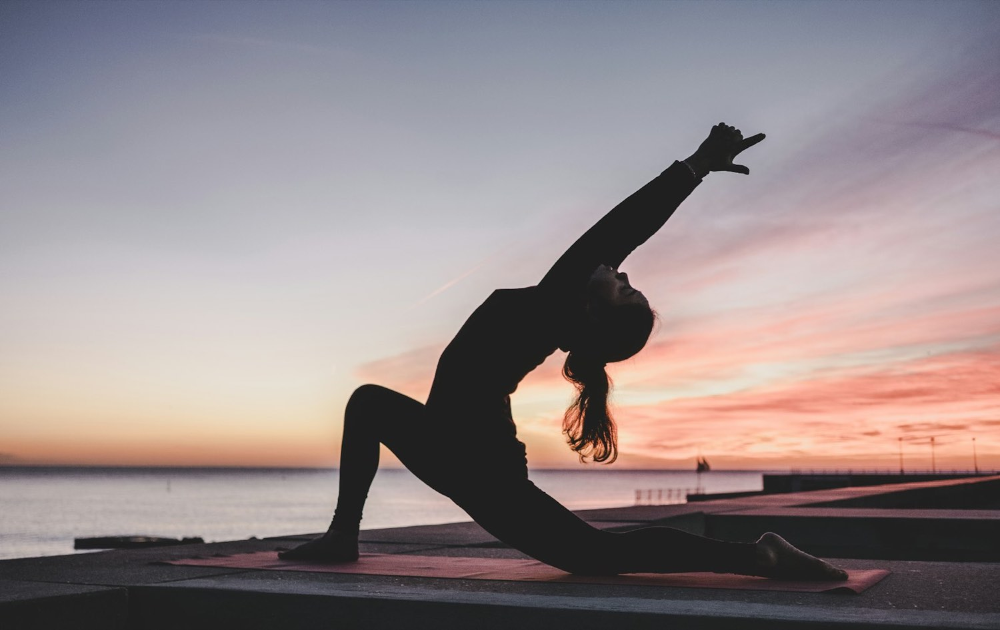

Kameralna szkoła jogi i centrum świadomego ruchu w sercu Poznania. Nie uczymy tylko pozycji — uczymy Twoje ciało i układ nerwowy wracać do równowagi, bezpiecznie i z uwagą, także jeśli zaczynasz od zera.
Ten sam zespół prowadzi Cię od pierwszej pozycji, przez pracę z bólem i stresem, aż po ścieżkę nauczycielską. To rzadka głębia jak na jedną szkołę — i właśnie ona sprawia, że warto tu zostać na lata.
Joga łączona z wiedzą fizjoterapeutyczną, mobilnością i pilatesem.
Medytacja, oddech i mindfulness (MBSR) oparte na neuronauce.
Ashtanga w autoryzowanej linii Pattabhiego i Sharatha Joisa.
Wieczory z fortepianem, dźwiękiem i głęboką regeneracją.
Wierzymy, że wszyscy ludzie są równi w prawie do szacunku. Uczymy uważnej obserwacji ciała i całościowego podejścia do człowieka — praktyki, która wspiera zarówno ciało, jak i umysł, jako integralna część zdrowego życia.
Nie musisz być rozciągnięty ani mieć doświadczenia. Wskażemy Ci ścieżkę dopasowaną do ciała i celu.
Łagodny, bezpieczny start dla początkujących — bez presji i porównań.
Joga + fizjoterapia + Rolfing dla osób z napięciami i po urazach.
Ashtanga, mobilność, wygięcia i inwersje dla praktykujących.
Kursy 200h / 300h akredytowane przez Yoga Alliance.
Zadzwoń lub napisz — pomożemy dobrać zajęcia i karnet do Twoich potrzeb i możliwości.
Zadzwoń: 505 904 825Różne nurty i poziomy — każdy prowadzący oferuje modyfikacje pozycji, byś praktykował z szacunkiem do swojego ciała.
Płatność na miejscu w szkole: gotówka, karta lub BLIK.
Zniżki: emeryci i renciści 10% (karnety), studenci — wejście jednorazowe 40 zł. Nie honorujemy kart firm pośredniczących (Multisport, FitProfit) — stawiamy na kameralną, świadomą praktykę.
Nasz zespół tworzą osoby z pasją, o różnorodnych doświadczeniach, które łączy zbliżone, uważne postrzeganie świata. Siedem osób, siedem różnych światów: fizjoterapia, neuronauka, sztuka, muzyka, mindfulness i tradycja Mysore. To właśnie połączenie tych kompetencji — obok indywidualnego podejścia każdej z osób — jest sercem Yoga Academy.
Gdy fizjoterapeuta-Rolfer, antropolożka-neuronaukowczyni, dziennikarka z domkami w lesie, pianistka koncertowa i nauczycielka mindfulness spotykają się w jednym miejscu, powstają doświadczenia, których nie odtworzy żadne inne studio w Poznaniu.
Zobacz, co z tego tworzymy →Uczymy językiem nauki, nie ezoteryki. Poniżej fundamenty naszego podejścia — więcej znajdziesz w naszych ebookach, na podcaście i kanale YouTube.
Przewodniki głębsze niż u konkurencji — każdy pisany przez osobę z zespołu w jej dziedzinie. Produkt cyfrowy: edukuje, buduje autorytet i jest pasywnym źródłem przychodu.
Bezpieczny, spójny z klimatem asortyment: akcesoria, odzież eco, vouchery oraz produkty cyfrowe.
Yoga Academy to nie „kolejna szkoła jogi”, lecz jedyne w Poznaniu miejsce, gdzie joga spotyka fizjoterapię, neuronaukę i sztukę. Największy, dziś niesprzedawany kapitał to 7 osób = 5 warstw biznesu pod jednym dachem. Kierunek: sprzedawać regulację (stresu, bólu, uwagi, snu), a nie same wejściówki — wyższa półka bez utraty kameralnego klimatu.
Skodyfikować unikalne podejście szkoły w nazwaną Metodę Świadomego Ruchu, firmowaną przez Rolfera-fizjoterapeutę i nauczycielkę o zapleczu neuronaukowym. To staje się licencjonowalnym know-how, niekopiowalnym lokalnie — fundament pozycjonowania premium.
Każdy to kombinacja min. dwóch osób — trudna do skopiowania, wyższa marża niż karnet.
Zweryfikowane światowymi wzorcami (School of Life, silent-retreat economy, kliniki zdrowia artystów przy konserwatoriach Peabody i Vanderbilt) — ale wyrastające wprost z ludzi tego zespołu.
Klinika zdrowia performera: pianistka, która zna ból zawodu + Rolfer-fizjoterapeuta. Pakiety dla muzyków filharmonii, oper i akademii.
Roczna szkoła filozofii jogi w kohorcie 12 osób — czytanie tekstów źródłowych z filozofem-praktykiem, nie weekendowy skrót.
Weekend pełnego milczenia dla 6 osób w domkach w drzewach — cisza jako luksus, w mikroskali niedostępnej sieciówkom.
Nocny kalendarz: przesilenia i Zaduszki. Literatura, fortepian o świcie, gongi — sezonowy rytuał, którego nie da się przenieść.
Rytuały progowe dla kobiet (menopauza, strata, nowy rozdział) — projektowane z warsztatem antropolożki, prowadzone z czułością.
Album: kompozycje pianistki + prowadzona Nidra. Winyl kolekcjonerski i licencje dla hoteli — muzyka, nie „muzyczka”.
8 tygodni pisania przeplatanego praktyką, prowadzi dziennikarka. Finał: wspólna antologia — wychodzisz z książką, nie z karnetem.
20 mecenasów rocznie: prywatne recitale, kolacje filozoficzne, Rolfing i nazwisko w kamienicy — mecenat sztuki, nie karnet VIP.
Światowe wellness idzie w stronę mierzalnej regulacji i personalizacji. Yoga Academy może być pierwsza w Polsce — bez utraty kameralnego charakteru, bo technologia mierzy, a człowiek prowadzi.
Chętni uczestnicy mierzą zmienność rytmu serca (opaska/pierścień) przed i po praktyce. Po miesiącu widzisz wykres: Twój układ nerwowy realnie się reguluje. Abonament „praktyka z pomiarem” — premium, ale z duszą: dane są Twoje, nie ma rankingów.
Między zajęciami: spersonalizowany plan krótkich praktyk (na sen, na kręgosłup, na stres) podpowiadany przez AI wytrenowane na wiedzy zespołu — z bibliotekę nagrań własnych nauczycieli, nie generyczne wideo z internetu.
Przy zapisie na ścieżkę „Ruch bez bólu”: analiza postawy ze zdjęcia/wideo (AI + ocena fizjoterapeuty). Po 3 miesiącach — drugi skan i porównanie. Efekt widoczny czarno na białym; naturalny wstęp do Rolfingu.
Nagrania Joga Nidra i medytacji w dźwięku przestrzennym (binaural/8D) z fortepianem Weroniki — biblioteka audio premium, jakiej nie ma żadna polska szkoła. Słuchawki + ciemność = domowy retreat.
Roczna ścieżka 50+: badania mobilności co kwartał, joga + pilates + oddech, wykłady o zdrowym starzeniu. Trend longevity to najszybciej rosnący segment wellness — tu podany po ludzku, nie po sylikonowo-dolinowemu.
Jedno członkostwo: studio + biblioteka online + retreaty z pierwszeństwem + zniżka na Rolfing i wydarzenia. Klub, nie karnet — poczucie przynależności zamiast licznika wejść.
Ta strona to prototyp kierunku. Tak proponujemy doprowadzić ją do wersji sprzedażowej.
Mamy gotowy moduł wiedzy, biznesplan i mapę produktów. Zróbmy następny krok razem — spokojnie, w duchu jogi.
KontaktInformacje o warsztatach, wyjazdach i nowych zajęciach.